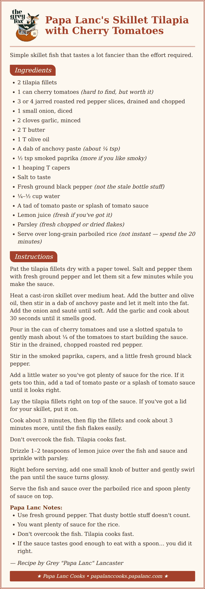

WELCOME
Simple skillet fish that tastes a lot fancier than the effort required.
Pat the tilapia fillets dry with a paper towel. Salt and pepper them with fresh ground pepper and let them sit a few minutes while you make the sauce.
Heat a cast-iron skillet over medium heat. Add the butter and olive oil, then stir in a dab of anchovy paste and let it melt into the fat. Add the onion and sauté until soft. Add the garlic and cook about 30 seconds until it smells good.
Pour in the can of cherry tomatoes and use a slotted spatula to gently mash about ¼ of the tomatoes to start building the sauce. Stir in the drained, chopped roasted red pepper.
Stir in the smoked paprika, capers, and a little fresh ground black pepper.
Add a little water so you've got plenty of sauce for the rice. If it gets too thin, add a tad of tomato paste or a splash of tomato sauce until it looks right.
Lay the tilapia fillets right on top of the sauce. If you've got a lid for your skillet, put it on.
Cook about 3 minutes, then flip the fillets and cook about 3 minutes more, until the fish flakes easily.
Don't overcook the fish. Tilapia cooks fast.
Drizzle 1–2 teaspoons of lemon juice over the fish and sauce and sprinkle with parsley.
Right before serving, add one small knob of butter and gently swirl the pan until the sauce turns glossy.
Serve the fish and sauce over the parboiled rice and spoon plenty of sauce on top.

WELCOME